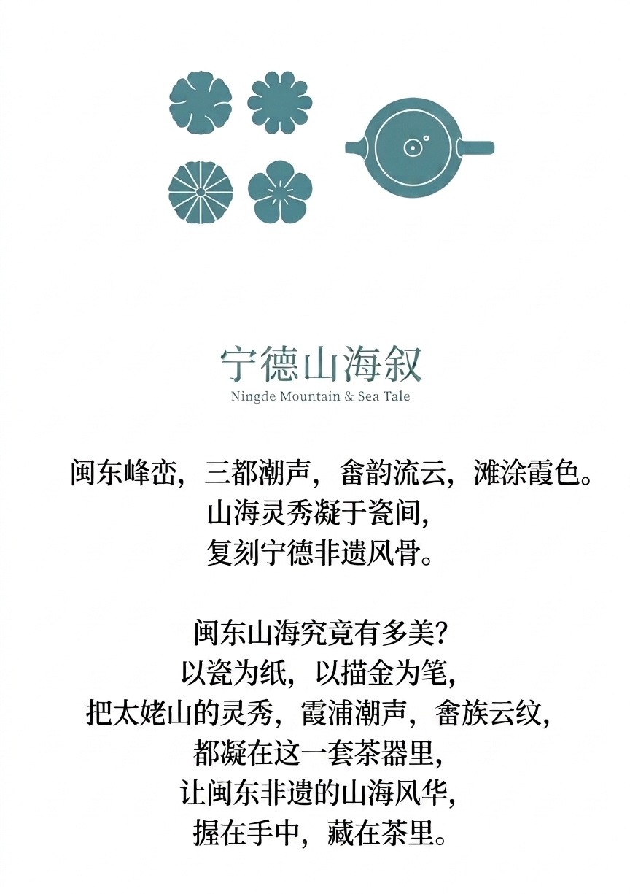

以青瓷为底，将宁德太姥山的奇秀、霞浦滩涂的潮韵，与畲族盘金绣、水纹非遗纹样相融，以描金线条勾勒山海，把闽东向海而生的渔耕记忆与非遗风骨，凝于方寸茶器之间。
以青瓷为底，描金勾勒畲族云纹，晕染闽东山海。将太姥山的灵秀、霞浦滩涂的潮意，与非遗盘金绣的精致相融，方寸间藏尽宁德山海非遗的温润风骨。
以青瓷为底，描金勾勒畲族云纹，浪涛晕染出霞浦潮声，远山复刻太姥灵秀。将闽东渔耕文化与非遗纹样凝于杯身，轻握间，仿佛听得见宁德山海的潮起风吟。
扫码预览